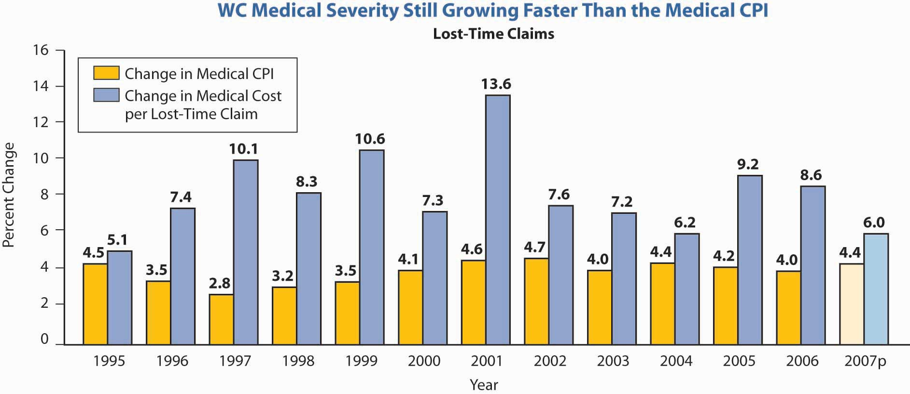

In this section we elaborate on the following:
Each state and certain other jurisdictions, such as the District of Columbia and other U.S. territories, has a workers’ compensationA system to enforce a series of state laws that requires employers to pay workers for their work-related injuries and illnesses with no relationship to who caused the injury or illness. system to enforce a series of state laws that requires employers to pay workers for their work-related injuries and illnesses with no relationship to who caused the injury or illness.
In the nineteenth century, before implementation of workers’ compensation laws in the United States, employees were seldom paid for work-related injuries. A major barrier to payment was that a worker had to prove an injury was the fault of his or her employer to recover damages. The typical employee was reluctant to sue his or her employer out of fear of losing the job. For the same reason, fellow workers typically refused to testify on behalf of an injured colleague about the circumstances surrounding an accident. If the injured employee could not prove fault, the employer had no responsibility. The injured employee’s ability to recover damages was hindered further by the fact that even a negligent employer could use three common law defensesThe three arguments that employers utilized to avoid assuming responsibility for employees’ work-related injuries prior to the establishment of of workers’ compensation laws: the fellow-servant rule, the assumption of risk doctrine, and the contributory negligence doctrine. to disavow liability for workers’ injuries: the fellow-servant rule, the doctrine of assumption of risk, and the doctrine of contributory negligence.
Under the fellow-servant ruleDefense under which an employee injured as a result of the conduct of a fellow worker cannot recover damages from the employer., an employee who was injured as a result of the conduct of a fellow worker could not recover damages from the employer. The assumption of risk doctrineDefense providing that an employee who knew, or should have known, of unsafe conditions of employment assumed the risk by remaining on the job. provided that an employee who knew, or should have known, of unsafe conditions of employment assumed the risk by remaining on the job. Further, it was argued that the employee’s compensation recognized the risk of the job. Therefore, he or she could not recover damages from the employer when injured because of such conditions. If an employee was injured through negligence of the employer but was partly at fault, the employee was guilty of contributory negligenceDefense arguing that an employee was injured through negligence of the employer but was also partly at fault.. Any contributory negligence, regardless of how slight, relieved the employer of responsibility for the injury.
These defenses made recovery of damages by injured employees nearly impossible and placed the cost of work-related injuries on the employee. As a result, during the latter part of the nineteenth century, various employer liability lawsPortion of a worker’s compensation policy that protects against potential liabilities not within the scope of the workers’ compensation law, yet arising out of employee injuries. were adopted to modify existing laws and improve the legal position of injured workers. The system of negligence liability was retained, however, and injured employees still had to prove that their employer was at fault to recover damages.
Even with modifications, the negligence system proved costly to administer and inefficient in protecting employees from the financial burdens of workplace injuries.A counterargument is postulated in D. Edward and Monroe Berkowitz, “Challenges to Workers’ Compensation: A Historical Analysis,” in Workers’ Compensation Adequacy, Equity & Efficiency, ed. John D. Worral and David Appel (Ithaca, NY: ILR Press, 1985). The authors contend that workers were becoming successful in suing employers. Thus, workers’ compensation developed as an aid to employers in limiting their responsibilities to employees. The need for more extensive reform was recognized, with many European countries instituting social insurance programs during the latter half of the 1800s. Beginning with Wisconsin in 1911,For a detailed history of workers’ compensation laws, see the Encyclopedia of Economic and Business History, http://eh.net/encyclopedia/fishback.workers.compensation.php//eh.net/encyclopedia/. U.S. jurisdictions developed the concept of workers’ compensation that compensated workers without the requirement that employers’ negligence must be proved (that is, with strict employer liability). Costs were borne directly by employers (generally in the form of workers’ compensation insurance premiums) and indirectly by employees who accepted lower wages in exchange for benefits. To the extent, if any, that total labor costs were increased, consumers (who benefit from industrialization) shared in the burden of industrial accidents through higher prices for goods and services. Employees demanded higher total compensation (wages plus benefits) to engage in high-risk occupations, resulting in incentives for employers to adopt safety programs. By 1948, each jurisdiction had similar laws.
In compromising between the interests of employees and those of employers, the originators of workers’ compensation systems limited the benefits available to employees to some amount less than the full loss. They also made those benefits the sole recourse of the employee against the employer for work-related injuries. This give-and-take of rights and duties between employers and employees is termed quid pro quo(Latin phrase meaning “this for that”)—give-and-take of rights and duties between employers and employees. (Latin for “this for that”). The intent was for the give and take to have an equal value, on average. You will see in our discussion of current workers’ compensation issues that some doubt exists as to whether equity has been maintained. An exception to the sole recourse concept exists in some states for the few employees who elect, prior to injury, not to be covered by workers’ compensation. Such employees, upon injury, can sue their employer; however, the employer in these instances retains the three defenses described earlier.
In addition to every state and territory having a workers’ compensation law, there are federal laws applicable to longshore workers and harbor workers, to nongovernment workers in the District of Columbia, and to civilian employees of the federal government. Workers’ compensation laws differ from jurisdiction to jurisdiction, but they all have the purpose of ensuring that injured workers and their dependents will receive benefits without question of fault.
Are your wrists painful? Or numb? (If you think about it long enough, you’ll convince yourself they’re one or the other.) Perhaps you have a repetitive stress injury or carpal tunnel syndrome. Maybe it’s now painful enough that you need to take a few days off. But wait—you use a computer at work, so this could be a work-related injury. Better go talk to the risk manager about filing a workers’ compensation claim. But wait—you spend hours at home every night playing computer games. If this is an off-hours injury, you should call your health maintenance organization (HMO) for an appointment with your primary care physician so you can arrange for short-term disability. But wait—when your boss is not looking, you surf the Internet at work. What do you do?
If you worked for Steelcase, Inc., an office-furniture manufacturer based in Grand Rapids, Michigan, your wrists might still hurt, but you would not have to worry about who to call. Steelcase used to handle its medical benefits like most companies do: the risk management department handled workers’ compensation; the human resources department handled health insurance, short-term disability, and long-term disability; and four separate insurers provided the separate coverages. Several events caused top management to rethink this disintegrated strategy: rising medical costs, a slowdown in the economy that forced a look at cost-saving measures, and the results of a survey showing that employees simply did not understand their benefits. “The employees hammered us in terms of not understanding who to call or what they get,” Steelcase manager Libby Child told Employee Benefit News in June 2001.
In 1997, Steelcase became one of the first U.S. companies to implement an integrated benefits program. It combined long- and short-term disability, workers’ compensation, medical case management, and Family and Medical Leave Act administration, and outsourced the record-keeping duties. Now a disabled employee—whether the injury is work-related or not—can make one phone call and talk to a representative who collects information, files any necessary claims, and assigns the worker to a medical case manager. The case manager ensures that the employee is receiving proper medical treatment and appropriate benefits and helps him or her return to work as soon as possible.
The integrated plan has been a hit with employees, who like the one-call system, and with managers because lost-time days decreased by one-third after the program was implemented. Steelcase’s financial executives are happy, too: the combined cost of short-term disability, long-term disability, and workers’ compensation dropped 13 percent in the program’s first three years.
In California, however, results with integrated benefits have been mixed. The California state legislature authorized three-year pilot programs in four counties to study the effectiveness of twenty-four-hour health care in the early 1990s, a time when workers’ compensation premiums were inordinately expensive for employers. By the time the programs were under way, these costs had become more competitive. Thus, most employers viewed a change to integrated benefits as simply too risky in relation to the traditional workers’ compensation system. Nonetheless, then California Insurance Commissioner (and current California Lieutenant Governor) John Garamendi championed the concept of integrated benefits. Garamendi maintains that placing workers’ compensation and health coverage under managed care has the potential to save California $1 billion through reductions in administrative and legal expenses, fraud, and medical costs.
With Steelcase and other pioneers proving the success of integrated benefits, it is a wonder that all companies have not jumped on the bandwagon. Many are, but there are still some obstacles to overcome:
In the past few years, many companies, large and small, have taken the leap toward integrating benefits. Recent converts include Pacific Bell; San Bernardino County in California; Pitney Bowes; and even an insurance company, Nationwide. Several organizations specializing in the twenty-four-hour coverage concept have also emerged. Notably, the Integrated Benefits Institute (IBI) merges health, absenteeism, and disability management under one banner and provides consulting services. Integrated Benefits LLC is another brokerage firm in this area operating in the Carolinas, and United 24 has produced success bringing together managed care, workers’ compensation, and disability insurance for Wisconsin employers. For any business that wants to reduce sick time off and disability benefits—which cost the average company 14.3 percent of payroll—the issue of integrating benefits is not “whether” but “when.”
Sources: Diana Reitz, “It’s Time to Resume the 24-Hour Coverage Debate,” National Underwriter Property & Casualty/Risk & Benefits Management Edition, February 8, 1999; Annmarie Geddes Lipold, “Benefit Integration Boosts Productivity and Profits,” Workforce.com, accessed March 31, 2009, http://www.workforce.com/section/02/feature/23/36/89/; Karen Lee, “Pioneers Return Data on Integrated Benefits,” Employee Benefit News, June 2001; Lee Ann Gjertsen, “Brokers Positive on Integrated Benefits,” National Underwriter, Property & Casualty/Risk & Benefits Management Edition, July 7, 1997; Leo D. Tinkham, Jr., “Making the Case for Integrated Disability Management,” National Underwriter, Life & Health/Financial Services Edition, May 13, 2002; Phyllis S. Myers and Etti G. Baranoff, “Workers’ Compensation: On the Cutting Edge,” Academy of Insurance Education, Washington, D.C., instructional video with supplemental study guide, video produced by the Center for Video Education, 1997.
Coverage under workers’ compensation is either inclusive or exclusive. Further, it is compulsory or elective, depending on state law. A major feature is that only injuries and illnesses that “arise out of and in the course of employment” are covered.
Inclusive lawsLaws that list all the types of employment covered under workers’ compensation. list all the types of employment that are covered under workers’ compensation; exclusive lawsLaws that cover all the types of employment under workers’ compensation except those that are excluded. cover all the types of employment under workers’ compensation except those that are excluded. Typically, domestic service and casual labor (for some small jobs) are excluded. Agricultural workers are excluded in nineteen jurisdictions, whereas their coverage is compulsory in twenty-seven jurisdictions and entirely voluntary in four jurisdictions. Some states limit coverage to occupations classified as hazardous. The laws of thirty-nine states apply to all employers in the types of employment covered; others apply only to employers with more than a specified number of employees. Any employer can comply voluntarily.
In all but two states, the laws regarding workers’ compensation are compulsory. In these two states (New Jersey and Texas) with elective lawsState laws providing that either the employer or the employee may elect not to be covered under workers’ compensation law., either the employer or the employee can elect not to be covered under workers’ compensation law. An employer who opts out loses the common law defenses discussed earlier. If the employer does not opt out but an employee does, the employer retains those defenses as far as that employee is concerned. If both opt out, the employer loses the defenses. It is unusual for employees to opt out because those who do must prove negligence in order to collect and must overcome the employer’s defenses.
An employer who does not opt out must pay benefits to injured employees in accordance with the requirements of the law, but that is the employer’s sole responsibility. Thus, an employee who is covered by workers’ compensation cannot sue his or her employer for damages because workers’ compensation is the employee’s sole remedyProvides that employees cannot (in most circumstances) sue their employers for work-related injuries, regardless of fault, when covered by workers’ compensation. (also called exclusive remedy). (In fact, workers’ compensation is losing its status as the employee’s sole remedy against the employer. Later in this chapter, we will discuss some of the current methods used by employees to negate the exclusive remedy rule.) By coming under the law, the employer avoids the cost of litigation and the risk of having to pay a large judgment in the event an injured employee’s suit for damages is successful.
In Texas, 65 percent of employers opted to stay in the system despite the fact that workers’ compensation is not mandatory.Daniel Hays, “Despite Option, More Texas Firms Offer Comp,” National Underwriter Online News Service, February 1, 2002. The results were obtained through a survey of 2,808 employers between August and October 2001 following the passage of a measure that outlawed the use of preinjury liability waivers by employees. It is likely that as insurance rates rise, more companies will opt to stay out of the system. Nearly all employers that opt out reduce their likelihood of being sued by providing an alternative employee benefit plan that includes medical and disability income benefits as well as accidental death and dismemberment benefits for work-related injuries and illnesses.Employee benefits are discussed in Chapter 19 "Mortality Risk Management: Individual Life Insurance and Group Life Insurance" to Chapter 20 "Employment-Based Risk Management (General)". Alternative coverage never exactly duplicates a state’s workers’ compensation benefits. In addition, the employer purchases employer’s liability insurance to cover the possibility of being sued by injured employees who are not satisfied with the alternative benefits.
Proponents of an opt-out provision argue that competition from alternative coverage provides market discipline to lower workers’ compensation insurance prices. Furthermore, greater exposure to common law liability suits may encourage workplace safety. Opponents see several drawbacks of opt-out provisions:
To limit benefits to situations in which a definite relationship exists between an employee’s work and the injury, most laws provide coverage only for injuries “arising out of and in the course of employment.” This phrase describes two limitations. First, the injury must arise out of employment, meaning that the job environment was the cause. For example, the family of someone who has a relatively stress-free job but dies of cardiac arrest at work would have trouble proving the work connection and therefore would not be eligible for workers’ compensation benefits. On the other hand, a police officer or firefighter who suffers a heart attack (even while not on duty) is presumed in many states to have suffered from work-related stress.
The second limitation on coverage is that the injury must occur while in the course of employment. That is, the loss-causing event must take place while the employee is on the job in order to be covered by workers’ compensation. An employee injured while engaged in horseplay, therefore, might not be eligible for workers’ compensation because the injury did not occur while the employee was “in the course of employment.” Likewise, coverage does not apply while traveling the normal commute between home and work. Along these same lines of reasoning, certain injuries generally are explicitly excluded, such as those caused by willful misconduct or deliberate failure to follow safety rules, those resulting from intoxication, and those that are self-inflicted.
Subject to these limitations, all work-related injuries are covered, even if they are due to employee negligence. In addition, every state provides benefits for occupational diseaseAn injury arising out of employment and due to causes and conditions characteristic of, and peculiar to, the particular trade, occupation, process, or employment, and excluding all ordinary diseases to which the general public is exposed., which is defined in terms such as “an injury arising out of employment and due to causes and conditions characteristic of, and peculiar to, the particular trade, occupation, process or employment, and excluding all ordinary diseases to which the general public is exposed.”Various concepts and statistics in this chapter are based on research described in S. Travis Pritchett, Scott E. Harrington, Helen I. Doerpinghaus, and Greg Niehaus, An Economic Analysis of Workers’ Compensation in South Carolina (Columbia, SC: Division of Research, College of Business Administration, University of South Carolina, 1994). Some states list particular diseases covered, whereas others simply follow general guidelines.
Workers’ compensation laws provide for four types of benefits: medical, income replacement, survivors’ benefits, and rehabilitation.
All laws provide unlimited medical care benefits for accidental injuries. Many cases do not involve large expenses, but it is not unusual for medical bills to run into many thousands of dollars. Medical expenses resulting from occupational illnesses may be covered in full for a specified period of time and then terminated. Unlike nonoccupational health insurance, workers’ compensation does not impose deductibles and coinsurance to create incentives for individuals to control their demand for medical services.
When you study health care in Chapter 21 "Employment-Based and Individual Longevity Risk Management" and Chapter 22 "Employment and Individual Health Risk Management", you will become very familiar with managed care. To save on the escalating costs of medical care in workers’ compensation, the medical coverage also uses managed care. Briefly, managed care limits the choice of doctors. The doctors’ decisions are reviewed by the insurer, and many procedures require preapproval. Along with many other states, Texas passed legislation in 2005 that incorporates managed care in the workers’ compensation system.Steve Tuckey, “Texas Legislature OKs Comp Reform,” National Underwriter Online News Service, May 31, 2005. Under these systems, doctors who take care of injured employees under workers’ compensation coverage are asked to try to get the employees back to work as soon as possible. The return-to-work objective is to ensure employees’ presence at work under any capacity, thus incurring less workers’ compensation losses. The industry is attempting to monitor itself for managing the care in a more cost-saving manner.Dale Chadwick and Peter Rousmaniere, “Managing Workers’ Comp: The Workers’ Compensation Managed-Care Industry Is Doing a Better Job of Monitoring Itself, but It Needs to Figure out What to Do with the Information,” Best’s Review, November 2001, http://www3.ambest.com/Frames/FrameServer.asp?AltSrc=23&Tab=1&Site=bestreview&refnum=13969 (accessed March 31, 2009). One area that causes major increases in the workers’ compensation rate is the cost of drugs. In 2006, medical costs per lost time claim increased 8.6 percent over the prior year, compared to a 4 percent increase in the medical consumer price index (CPI).Dennis C. Mealy, FCAS, MAAA, National Council on Compensation Insurance, Inc. (NCCI) Chief Actuary, “State of the Line” Annul Issues Symposium (AIS), May 8, 2008, https://www.ncci.com/documents/AIS-2008-SOL-Complete.pdf (accessed March 28, 2009). Figure 16.3 "Workers’ Compensation Medical Severity*" shows the costs of medical claims under workers’ compensation from 1995 to 2007. As you can see, the severity of medical claims (losses per claim) has outpaced the medical CPI every year since.
Figure 16.3 Workers’ Compensation Medical Severity*
* 2007p: Preliminary based on data valued as of December 31, 2007;
Medical severity 1995–2006: Based on data through December 31, 2006, developed to ultimate;
based on the states where NCCI provides ratemaking services, excludes the effects of deductible policies
Source: Dennis C. Mealy, FCAS, MAAA, National Council on Compensation Insurance (NCCI), Inc. Chief Actuary, “State of the Line” Annul Issues Symposium (AIS), May 8, 2008, Accessed March 28, 2009, https://www.ncci.com/documents/AIS-2008-SOL-Complete.pdf.
© 2008 NCCI Holdings, Inc. Reproduced with permission.
All workers’ compensation laws provide an injured employee with a weekly income while disabled as the result of a covered injury or disease. Income replacement benefits under workers’ compensation are commonly referred to by industry personnel as indemnity benefitsReimburse insureds for actual costs incurred for health care up to covered limits in traditional fee-for-service plans.. The amount and duration of indemnity payments depend on the following factors:
Total disability refers to the condition of an employee who misses work because he or she is unable to perform any of the important duties of the occupation. Partial disability, on the other hand, means the injured employee can perform some but not all, of the duties of his or her occupation. In either case, disability may be permanent or temporary. Permanent total disability means the injured person is not expected to be able to work again. Temporary total disability means the injured employee is expected to be able to return to work at some future time.The amount of weekly income benefits is the same for both permanent and temporary total disability.
Partial disability may be either temporary or permanent. Temporary partial payments are most likely to be made following a period of temporary total disability. A person who can perform some but not all work duties qualifies for temporary partial benefitsPayments made to an injured employee can perform some, but not all, work duties.. Such benefits are based on the difference between wages earned before and after an injury. They account for a minor portion of total claim payments.
Most laws specify that the loss of certain body parts constitutes permanent partial disabilityThe loss of certain body parts.. Benefits expressed in terms of the number of weeks of total disability payments are usually provided in such cases and are known as scheduled injuriesInjuries covered under permanent partial disability.. For example, the loss of an arm might entitle the injured worker to two hundred weeks of total disability benefits; the loss of a finger might entitle him or her to thirty-five weeks of benefits. No actual loss of time from work or income is required because the assumption is that loss of a body part causes a loss of future income.
Of the fifteen largest classes of occupation, clerical jobs see the highest number of lost time claims. However, this by far the largest occupational class by payroll. The actual frequency of claims as a percentage of payroll dollars is among the lowest for clerical workers. Historically, trucking has seen the highest frequency of claims by payroll. Overall, the frequency of lost-time-only claims has declined, which is the good news in the workers’ compensation field. The largest drop is in the convalescent/nursing home claims. The least decline is in the drivers/chauffeurs and college professional classifications.
Weekly benefits for death, disability, and (often) disfigurement are primarily based on the employee’s average weekly wage (average earned income per week during some specified period prior to disability) multiplied by a replacement ratio, expressed as a percentage of the average weekly wage. Jurisdictions also set minimum and maximum weekly benefits.
The replacement percentage for disability benefits ranges from sixty in one jurisdiction to seventy in two others, but in most jurisdictions it is 66⅔. The percentage reflects the intent to replace income after taxes and other work-related expenses because workers’ compensation benefits are not subject to income taxation. In Virginia, for example, the compensation rate is adjusted each year on July 1. Effective July 1, 2008, the maximum rate was $841, and the minimum rate was $210.25. The cost of living increase will be 4.2 percent, effective October 1, 2008.See Virginia Workers’ Compensation Commission Web site at http://www.vwc.state.va.us/ (accessed March 28, 2009). In Texas, the maximum temporary income benefit for 2009 is $750 and the minimum is $112.See Texas Workers’ Compensation Commission Web site at http://www.twcc.state.tx.us (accessed March 28, 2009) for the details regarding the Texas benefits. Each state workers’ compensation commission has a Web site that shows its benefit amounts. Twenty jurisdictions lower their permanent partial maximum payment per week below their maximum for total disability. For these jurisdictions, the average permanent partial maximum is 66⅔ percent of their total disability maximum. With respect to death benefits, thirty-one jurisdictions use 66⅔ percent in determining survivors’ benefits for a spouse only; five of these use a higher percentage for a spouse plus children. The range of survivors’ benefits for a spouse plus children ranges from 60 percent in Idaho to 75 percent in Texas. Examples of Texas benefits calculations are demonstrated in hypothetical incomes in Table 16.1 "Hypothetical Examples of Texas Workers’ Compensation Income Calculations" A to D. In Texas, temporary income benefits equal 70 percent of the difference between a worker’s average weekly wage and the weekly wage after the injury. If a worker’s average weekly wage was $500, and an injury caused the worker to lose all of his or her income, temporary income benefits would be $350 a week.
Table 16.1 Hypothetical Examples of Texas Workers’ Compensation Income Calculations
| A. Calculation of Temporary Income Benefits | |
| Average weekly wage (hypothetical) | $400 |
| Less: wage after injury | 0 |
| Equals | $400 |
| Temporary income benefit (70 percent the “equals” amount) | $280 |
| B. Calculation of Supplemental Income Benefits | |
| Average weekly wage | $400 |
| 80 percent of weekly wage | $320 |
| Less: the current wage | 0 |
| Equals | $320 |
| Supplemental benefit (80 percent of the “equals” amount) | $256 |
| C. Calculation of Lifetime Income Benefits for Disability with a Loss of Limb | |
| Average weekly wage | $400 |
| Lifetime income benefit (75 percent of weekly wage) | $300 |
| D. Calculation of Death Benefits | |
| Average weekly wage | $400 |
| Death benefit (75 percent of weekly wage) | $300 |
The next example is demonstrated in Table 16.1 "Hypothetical Examples of Texas Workers’ Compensation Income Calculations" B for temporary income after returning to work part-time. In Texas, an injured worker may get lifetime income benefits if the worker has an injury or illness that results in the loss of the hands, feet, or eyesight, or if the worker meets the conditions of the Texas Workers’ Compensation Act. Table 16.1 "Hypothetical Examples of Texas Workers’ Compensation Income Calculations" C provides an example of benefits for lifetime in such a case.
In thirty-nine jurisdictions, no limit is put on the duration of temporary total disability. Nine jurisdictions, however, allow benefits for less than 500 weeks; two specify a 500-week maximum. The limits are seldom reached in practice because the typical injured worker’s condition reaches “maximum medical improvement,” which terminates temporary total benefits earlier. Maximum medical improvement is reached when additional medical treatment is not expected to result in improvement of the person’s condition.
In forty-three jurisdictions, permanent total benefits are paid for the duration of the disability and/or lifetime. These jurisdictions generally do not impose a maximum dollar limit on the aggregate amount that can be paid.
Every jurisdiction has a waiting period before indemnity payments (but not medical benefits) for temporary disability can begin; the range is from three to seven days. The waiting period has the advantages of giving a financial incentive to work, reducing administrative costs, and reducing the cost of benefits. If disability continues for a specified period (typically, two to four weeks), benefits are retroactive to the date disability began. Moral hazard is created among employees who reach maximum medical improvement just before the time of the retroactive trigger. Some employees will malinger long enough to waive the waiting period. Hawaii does not allow retroactive benefits.
Fifteen jurisdictions have an automatic cost-of-living adjustment (COLA) for weekly benefits. In some cases, the COLA takes effect only after disability has continued for one or two years. Because benefit rates are usually set by law, those rates in jurisdictions that lack automatic increases for permanent benefits become out of date rapidly during periods of inflation.
In the event of a work-related death, all jurisdictions provide survivor income benefits for the surviving spouse and dependent children, as well as a burial allowance. The survivor income benefit for a spouse plus children is typically (in thirty jurisdictions) 66⅔ percent of the worker’s average weekly wage. Several jurisdictions provide additional income for one child only. Table 16.1 "Hypothetical Examples of Texas Workers’ Compensation Income Calculations" D provides an example of the death benefits in Texas. Burial benefits pay up to $2,500 of the worker’s funeral expenses. Burial benefits are paid to the person who paid the worker’s funeral expenses. The death benefits in New York were discussed earlier in this chapter. In the example case for Texas, the replacement of lost income is 75 percent, as shown in Table 16.1 "Hypothetical Examples of Texas Workers’ Compensation Income Calculations" D.
Most people who are disabled by injury or disease make a complete recovery with ordinary medical care and return to work able to resume their former duties. Many workers, however, suffer disability of such a nature that something more than income payments and ordinary medical services is required to restore them, to the greatest extent possible, to their former economic and social situation. Rehabilitation is the process of accomplishing this objective and involves the following:
About one-fourth of the workers’ compensation laws place this responsibility on the employer (or the insurer, if applicable). Most of the laws require special maintenance benefits to encourage disabled workers to cooperate in a rehabilitation program. Nearly all states reduce or stop income payments entirely to workers who refuse to participate.
In this section you studied the history of workers’ compensation, related laws, and benefits provided:
Benefits provided under workers’ compensation are medical, income replacement, survivors’ benefits, and rehabilitation.